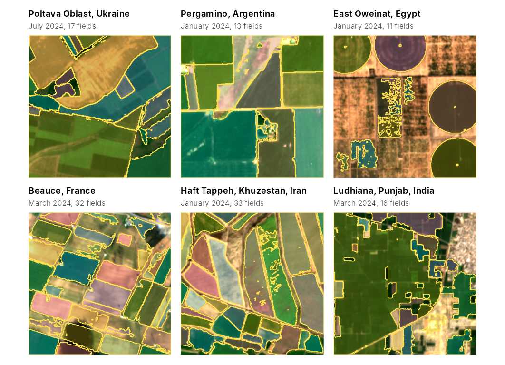

The pretrained "general" model was fitted in California
and Washington. These maps show what it produces, without any local
training, in six other farming regions: one season of monthly Sentinel-2
scenes downloaded with fb_s2_monthly() for a box of about
1.6 by 1.6 km in each region, and the fields delineated by
fb_fields() with the model’s thresholds. There are no
reference fields for these boxes, so the maps show how the method
behaves, not how accurate it is; for accuracy, see
vignette("validation"). Downloading needs the
rstac package and an internet connection, so the code is
not run when the article is built. The figure was produced with this
code; the script that made it, data-raw/vignette_gallery.R,
is in the source repository.

library(fieldborders)
library(ggplot2)
library(patchwork)
sites <- data.frame(
label = c("Poltava Oblast, Ukraine", "Pergamino, Argentina", "East Oweinat, Egypt", "Beauce, France",
"Haft Tappeh, Khuzestan, Iran", "Ludhiana, Punjab, India"),
lon = c(33.30, -60.45, 28.6584, 1.65, 48.3632, 75.65),
lat = c(50.30, -33.85, 22.5527, 48.32, 32.0069, 30.85),
start = c("2024-01-01", "2023-07-01", "2024-01-01", "2024-01-01", "2024-01-01", "2024-01-01"),
end = c("2024-12-31", "2024-06-30", "2024-12-31", "2024-12-31", "2024-12-31", "2024-12-31"))
# a box of about 1.6 km around a point, in longitude and latitude
box <- function(lon, lat, half_km = 0.8) {
dlat <- half_km / 111.32
dlon <- half_km / (111.32 * cos(lat * pi / 180))
c(lon - dlon, lat - dlat, lon + dlon, lat + dlat)
}
# the date with the highest median NDVI, shown as background
greenest <- function(s) {
nb <- length(s$bands)
v <- vapply(seq_along(s$dates), function(k) {
x <- terra::values(s$data[[(k - 1) * nb + match(c("B08", "B04"), s$bands)]], mat = TRUE)
median((x[, 1] - x[, 2]) / (x[, 1] + x[, 2] + 1e-4), na.rm = TRUE)
}, 0)
which.max(v)
}
m <- fb_model_pretrained("general")
panels <- lapply(seq_len(nrow(sites)), function(i) {
s <- fb_s2_monthly(box(sites$lon[i], sites$lat[i]), sites$start[i], sites$end[i])
res <- fb_fields(s, m)
k <- greenest(s)
fb_plot_fields(res$fields, s, date = k, fill_alpha = 0.35, title = sites$label[i]) +
labs(subtitle = sprintf("%s, %d fields", format(s$dates[k], "%B %Y"), nrow(res$polygons)))
})
wrap_plots(panels, ncol = 3)In the southern hemisphere (Pergamino) the season runs from July to June. Each download took 1.4 to 3.0 minutes.
| Site | Dates | Date shown | Fields | Median field area (ha) |
|---|---|---|---|---|
| Poltava Oblast, Ukraine | 9 | 17 July 2024 | 17 | 3.1 |
| Pergamino, Argentina | 12 | 26 January 2024 | 13 | 19.3 |
| East Oweinat, Egypt | 12 | 31 January 2024 | 11 | 4.4 |
| Beauce, France | 6 | 5 March 2024 | 32 | 4.3 |
| Haft Tappeh, Khuzestan, Iran | 12 | 25 January 2024 | 33 | 3.9 |
| Ludhiana, Punjab, India | 12 | 12 March 2024 | 16 | 2.5 |
Fields cut by the edge of a box are counted and measured only within it.
What the maps show
- Large fields with different crops (Pergamino, Beauce, Haft Tappeh) come out as separate objects that follow the field borders. Some fields are cut into pieces or have ragged outlines where the cover within them varies, as in Beauce and in the middle of the Haft Tappeh box.
- Centre pivots in East Oweinat are delineated as circles. The rectangular plots with sparse vegetation in the middle of that box are broken into irregular fragments.
- Neighbouring fields with little contrast between them are merged: several of the large fields of Poltava form one object.
- Small plots in Ludhiana are merged into a few large objects. The borders between them are mostly bunds much narrower than a Sentinel-2 pixel (10 m), which show only where the neighbouring plots differ in cover.
Imperfect scenes
fb_s2_monthly() keeps, for each month, the scene with
the fewest pixels that the Sentinel-2 scene classification marks as
missing, defective, cloud, cloud shadow or cirrus. That classification
marked every scene of these six series as clear, but in true colour the
January scene of Poltava is covered by snow, the April scene of Poltava
and the July, August and October scenes of Ludhiana are partly cloudy or
hazy, and the March scene of Beauce holds a small cloud and its shadow.
Dropping these dates with fb_subset_dates() changed the
delineated fields as follows:
| Site | Dates dropped | Fields with all dates | Fields without them |
|---|---|---|---|
| Poltava Oblast, Ukraine | 12 January, 16 April | 17 (of 9 dates) | 18 (of 7 dates) |
| Beauce, France | 5 March | 32 (of 6 dates) | 27 (of 5 dates) |
| Ludhiana, Punjab, India | 30 July, 24 August, 28 October | 16 (of 12 dates) | 18 (of 9 dates) |
The number of fields changed by one to five. In Beauce, which had
only six usable months, the fields became more fragmented without the
March scene. As a rule of thumb, drop a date that is largely covered by
cloud, haze or snow, and keep one in which only a small part is
affected. Snow can also be marked as invalid when downloading, with
invalid_classes = c(0, 1, 3, 8, 9, 10, 11), but the scene
classification can label bright bare ground as snow.